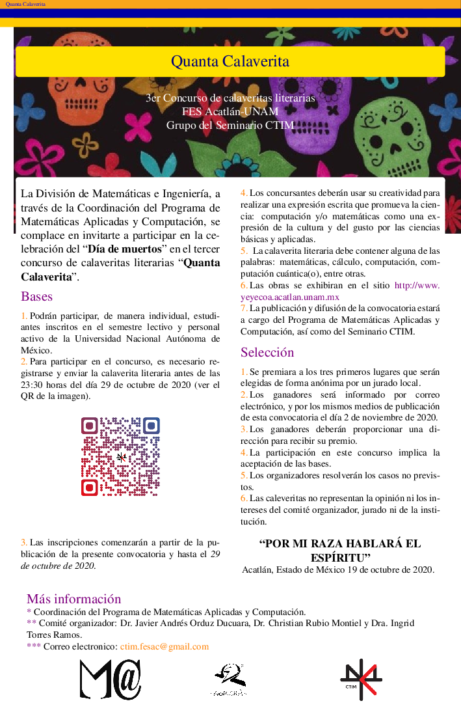

JO's Courses

Group of Quantum and Scientific Computing
Academic Activities
Contents
STEM Seminar
We want to see you in the seminar in the youtube channel, while we have to stay at home.
- Juan Pablo Tellez.
Talk: Los seguros en la era dígital

Quanta Calaverita
This entanglement event integrates computing, mathematics and, general science, with the mexican traditions in an academic environment where people can participated with calaverita which must contain applied, maths and engineering concepts.

Submit your Calaverita https://tinyurl.com/yyhhzbog
Call for calaveritas

Past events: In this link you reach out the previous information. https://sites.google.com/view/quantacalaverita
QMexico
This an event higly recommended for enthusiastic people, and interested about Quantum Computing and Quantum Machine Learning.

Besides, you can follow our channel on
- youtube: https://www.youtube.com/channel/UCsSBfKzwO8C3A3VA_OxXqqA/live
- twitter: https://twitter.com/_QMexico
- facebook: https://www.facebook.com/qmexico42
- Github: https://qmexico.github.io/
QMexico Workshop
We invite you to our events:

Use next link to register https://tinyurl.com/y5wn55ek
fill this form https://tinyurl.com/y3mc3z59